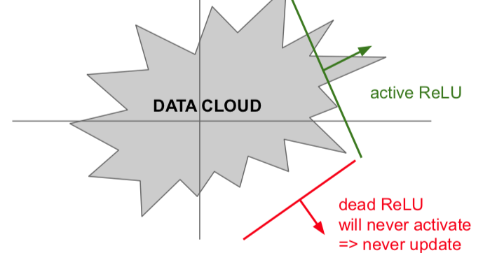
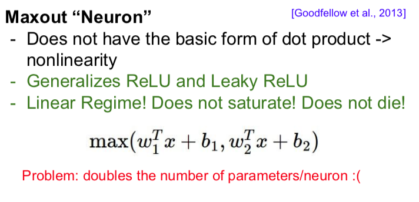

One Time Setup:
- Activation Functions, Preprocessing, Weight Initialization, Regularization, Gradient Checking
Training Dynamics:
- Babysitting the learning process, parameter updates, hyperparameter optimization
Evaluation
- Model ensembles
Activation Functions
(See Appendix 1)
Issues if all the values at some stage of the model is positive (because the output of the non-linearity is positive, or because your data is not zero-meaned) and that is passed as input to the next level: During backprop the model can omly compute gradient updates in one direction for all weights (all positive or all negative), leading to inefficient gradient updates.
TL;DR: Use ReLU. Be careful with learning rates as too high learnign rates can cause ReLU to fall into zero region.
Try out Leaky ReLU/ Maxout/ ELU
Try out tanh but don’t expect much
Don’t use sigmoid.
Issues with ReLU (Even though dead ReLU rate is low enough in practice that it works well):
Not zero-centered
Negative Half saturates. Parts of the data will fall into dead ReLU: Will never activate and thus will never update. This can happen because of: bad initialisation, or too high learning rate (the weights get too large and move into the negative section). About 20% of ReLU activations with respect to the training data are dead dependening on what the weights happen to be, if this number is too high could be an issue for training. However, ReLU works okay in practice for training updates.
Some people like to initialize ReLUs with slightly positive bias (0.01). Leaky ReLU is also a good idea.
Maxout is also a good idea: Generalized ReLU/Leaky ReLU but requires double the parameters/neuron. Not super worth it.
Data Preprocessing
TLDR: In practive for images: zero-center only
- Subtract the mean image (e.g. ALexNet = mean image = [32,32,3] array) over all training images, or
- Subtract per-channel mean (e.g. VGGNet, mean along each channel = 3 numbers. Channel is the R, G, or B value).
Not common to normalize variance, to do PCA or whitening. (Appendix 2)
Weight Initialization
When using tanh - One optimal weight initialisation is “Xavier Initialization”. You want the variance of the input to be the same as the variance of the output. If you have a small number of inputs, we will divide by the smaller number and get larger weights. And we need larger weights because with small inputs and we’re multipluing each of these by a weight we need larger weights to get the same larger variance of output, and vice versa if we have many inputs we want smaller weights to get the same spread at the output.
W = np.random.randn(fan_in, fan_out) / np.sqrt(fan_in)
However, it assumes we are in the active region of a tanh. It actually breaks when we use ReLU, since ReLU kills half of your units, it halves the variance that you get out of this. So if you make the same asumptions as above, you’ll get a too-small variance and then you’ll get the distribution starts collapsing, you’ll get more and more units deactivated at 0.
When using ReLU:
Use Xavier Initialization with a /2 (MSRA Initialization, aka He-et-al Initialization)
W = np.random.randn(fan_in, fan_out) / np.sqrt(fan_in/2)
This is an active area of research.
Batch Norm
Controls the weights.
Consider a batch of activations at some layer. To make each dimension unit gaussian, apply over the batch the differentiable function
This is a differentiable function (taking the mean and variance as constants)
1. Compute the empirical mean and variance independently for each dimension (feature)
2. Normalize each example using the batch mean and standard deviation.
Batchnorm is usually inserted after a Fully Connected or Convolutional layer, and before nonlinearity. (Appendix 6)
Note: In convolutional layers, we want to nornalize not just across all the training examples (and independently for each feature), but we also want to normalize jointly across all the feature dimensions that we have in our activation map as well as all the training examples. We do this because we want to obey the convolutional property and we want nearby locations to be normalized in the same way.
- So we have one mean and one standard deviation per activation map (filter map) and we normalize across all examples in the batch
[Read Ioffe and Szegedy 2015]
Maybe a little saturation is good, and we want the network to learn the optimal . We give the batch norm as a “hint” but the model can modify the actual normalization if it wants to. So the procedure is
1. Normalize:
2. And then allow the network to squash the range if it wants to
Thus, the network can learn the identity function if it wants to.
(Appendix 6)
Note: At test time, the mean/std are not computed based on the batch. Instead, a single fixed empiracal mean of activations during training is used (e.g. can be estimated during training with running averages)
Babysitting the Learning Process
1. Zero-mean the data
2. Choose the archutecture
3. Double check that the loss is reasonable. Analytically write out what a toy example loss is, and make sure your loss is similar to that.
4. Then, crank up regularisation. Make sure that loss increased
5. Then, try to train and start off with a very small amount of data.
- Make sure that you can overfit on a very small portion of the data.
- Turn off regularization and just see if you can make the loss go down to 0.
6. Now, start training for real.
Start with small regularization and find learning rate that makes the loss go down (learning rate is one of the most important hyperparameters). If loss is not going down, learning rate is too low. Loss exploding: Learning rate too high.
Rough range for learning rates to try is somewhere between [1e-5 and 1e-3]. Iterate this until you find a good learning rate.
How to pick hyper parameters
Do cross-validation on dev set to pick hyperparaneters.
1. First, do a coarse stage, pick values for hyper parameters pretty far apart and learn for only a few epochs. You should be able to get a good sense of which range of hyperparameters work well from a few epochs.
2. Second stage: pick finer-gramined hyperparaneters, run for longer.
Note: It’s best to sample hypoerparameters in log space!
Tip for detecting explosions (NaNs) in the solver: If cost (or loss) is ever 3 * the original cost, break out early.
Random search vs grid search. It’s actually better to sample hyperparameters randomly rather than doing grid search.
Monitor and visualize the learning rate to make sure that it’s good.
Monitor and visualize the accuracy: big gap = overfitting (increse regularization strength?), no gap = increase model capacity?
Track the ratio of weight updates/weight magnitudes: Want this to be somewhere around 0.001 or so, 0.01 is okay.
(Appendix 7)
Summary of Lecture
Appendices
Appendix 1: Activation Functions
All activation functions.
Issues with Sigmoid - saturated gradient can kill the gradient. Moreover, sigmoid is not zero-centered. Never use it.
About 20% of ReLU activations at any point in time in the network are dead, if this number is too high could be an issue for training.


Appendix 2: What happens when your data is not zero-meaned or if the input to a neuron (output of the nonlinearity) is always positive.

Suppose the function f above is one layer of our neural network.
The gradient of the total loss L with respect to f will either be positive or negative. If the ourput of our nonlinearity (x_i) is always positive, then the direction of the gradient is passed down to every dimension w_i of our weight vector. In particular, if the gradient of L w.r.t. f is negative and all x_i are positive, then the update for all w_i will be negative, and if all x_i are negative, then the update for all w_i will always be negative in direction, and thus the gradient update will move all dimensions in the same dimension. This makes gradient updates very inefficient becuase it requires zig-zags to move towards the direction you want.
If your data is not zero-meaned, you will have some of this problem to a smaller extent, because your data will ’tend’ to be more positie or negative, and thus gradient updates will ’tend’ to be more all positive or more all negative.
Appendix 3:
Preprocessing
Standard data preprocessing techniques is zero-meaning the data and then normalizing it w.r.t it’s stddev. Zero-centering avoids the unbalanced data leading to unbalanced updates problem.
In images we don’t really normalize image data because they tend to be reasonably well distributed along pixel magnitude already.
Note: Only performing mean-subtraction is commonly done for images. PCA/whitening/other techniques are not commonly done.
Appendix 4:
Problem approaches
When you initialize W to all zero, all neurons will update in the same way, and all get the same gradient, and all update the same. So use random initialization.
If you initialize weights to small random numbers - works okay for small networks, but problems for deeper networks. - the standard deviation shrinks and quickly colllapses to zero. Then all activations x become zero (or very close to zero) on repeated multiplication of W on the forward pass, and on the backward pass the gradient update for W is x at each level, which is very small due to the multiplucation of W oat previous levels, so the gradient flowing back will also not update.
If you initialize weights sampled from random gaussian with mean 1.0- almost all neurons completely saturated, either -1 or 1, if you use a saturing nonlinearity like tanh. Gradients are all 0.
One optimal weight initialisation is “Xavier Initialization”
W = np.random.randn(fan_in, fan_out) / np.sqrt(fan_in) # if using tanh
W = np.random.randn(fan_in, fan_out) / np.sqrt(fan_in/2) # if using ReLU
Appendix 5: Batch Norm
Appendix 7:
Grab Bag of different methods to babysit learning process
Afterwards, turn regularization on and check the loss went up